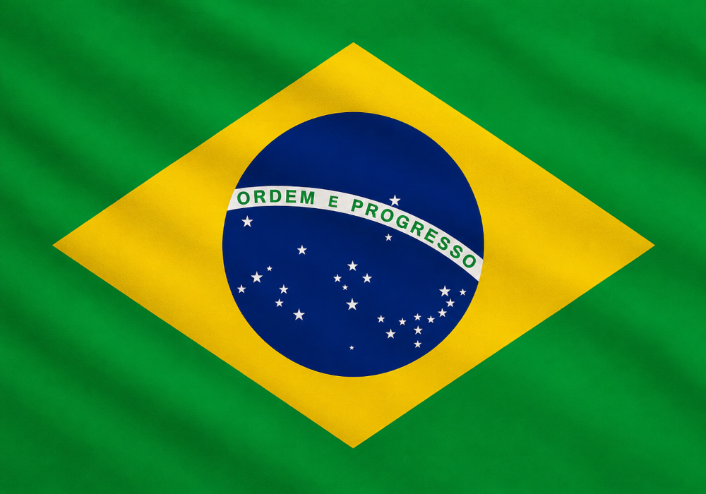

Brasil

Veja um pouco do motivo de eu gostar tanto do Brasil.
História
O Brasil é o maior país da América do Sul e um dos maiores do mundo em extensão territorial. Antes da chegada dos portugueses, em 1500, o território era habitado por diversos povos indígenas, que possuíam culturas e tradições próprias. Durante mais de três séculos, o Brasil foi uma colônia de Portugal, conquistando sua independência em 1822. Atualmente, o país é uma república democrática conhecida por sua diversidade cultural, riquezas naturais e importância econômica na América Latina.
Pontos Turísticos
O Brasil possui uma grande variedade de atrações turísticas reconhecidas mundialmente. Entre elas estão o Cristo Redentor e o Pão de Açúcar, no Rio de Janeiro, as Cataratas do Iguaçu, no Paraná, e a Floresta Amazônica, a maior floresta tropical do planeta. Além disso, cidades como Salvador, Ouro Preto e Brasília oferecem importantes patrimônios históricos e culturais, enquanto as praias do Nordeste atraem milhões de visitantes todos os anos.
Gastronomia
A culinária brasileira é uma das mais diversificadas do mundo, refletindo a influência de povos indígenas, africanos e europeus. Entre os pratos mais famosos estão a feijoada, o pão de queijo, o acarajé, a moqueca e o churrasco. O país também é conhecido por frutas tropicais, como açaí, caju e cupuaçu, além de ser um dos maiores produtores e exportadores de café do mundo.
Curiosidades
O Brasil é o quinto maior país do mundo em área territorial e possui a maior floresta tropical do planeta, a Amazônia. O português é o idioma oficial e o mais falado da América do Sul. O país também abriga uma das maiores biodiversidades do mundo e é conhecido internacionalmente por suas festas populares, como o Carnaval, considerado um dos maiores eventos culturais do planeta. Além disso, a seleção brasileira é a maior vencedora da Copa do Mundo de futebol.
Citação Famosa
"Ordem e Progresso."
- Lema da Bandeira do Brasil